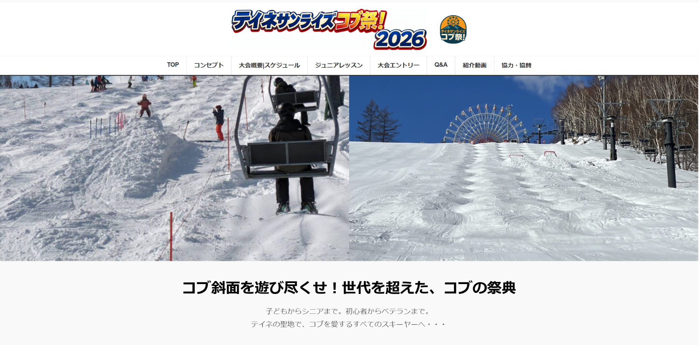

カテゴリ：業務自動化・イベント運営のDX
スキーイベント運営のデジタル化・自動化
スキーイベントの参加者募集から当日案内までの一連の運営業務を、HTML・CSSで制作したイベントサイトと、Googleフォーム・スプレッドシート・GAS（Googleのサービスを自動で動かす仕組み）を組み合わせてデジタル化しました。実際のイベント運営で使用したものです。

デモ動画
実際に運営で使用したイベントサイトと、申込受付から参加者情報の管理・案内までをデジタル化した流れをご紹介します。
どんな課題があったか
イベントの参加申込を紙やメールで受け付けると、名簿への転記や参加者への案内送付を一件ずつ手作業で行う必要があり、運営側の負担になっていました。
実施内容・解決アプローチ
参加申込の受付から当日案内までを、単発の制作物としてではなく、一連の業務フローとして仕組み化しました。
- HTML・CSSでイベント案内サイトを制作
- Googleフォームで参加申込を受付
- 申込内容をGoogleスプレッドシートに自動で集約
- GAS（Google Apps Script、Googleのサービスを自動で動かす仕組み）を使い、登録者へ案内メールを自動配信
全体の処理フロー
イベントHP
イベント案内・申込導線
Googleフォーム
参加申込受付
Googleスプレッドシート
申込情報を集約
GAS
登録者情報をもとに処理
案内メール送信
参加者へ連絡
【代替アプローチ】現在であれば、MakeやPower Automate等のノーコード自動化ツールを使って同様の流れを構築することも検討できます。今回は使い慣れたGoogle系ツールの組み合わせで一連の流れを組みました。
主な機能
- 参加申込フォーム（Googleフォーム）
- 申込内容の自動集計・名簿化（Googleスプレッドシート）
- 登録者への案内メール自動配信（GAS）
- HTML・CSSによるレスポンシブ対応のイベント案内サイト
使用技術・ツール
HTML・CSS／Googleフォーム／Googleスプレッドシート／GAS（Google Apps Script）
自分が担当した範囲
イベントサイトの制作、フォーム・スプレッドシートの設計、GASによる案内メール自動配信の実装まで、一連の仕組みづくりを担当しました。
配慮した点
- 参加者個人が特定される情報は、本ページやサイト上に掲載しないようにした。
- フォームやスプレッドシートの項目を必要最小限にし、運営側が状況を把握しやすい形にした。
- 手作業を残す部分と自動化する部分を切り分け、無理なく運用できる範囲にとどめた。
現在の状態と今後の拡張案
本仕組みは、実際のスキーイベント運営で使用しました。
今後の拡張案としては、参加費のオンライン決済との連携、当日受付のデジタル化、Make・Power Automate等への置き換えによるさらなる自動化などを検討しています。
注意事項
本事例は実際のイベント運営で使用したものですが、参加者個人が特定される情報は掲載していません。
掲載内容は仕組みの説明を目的としており、参加人数などの数値は記載していません。